1. 前提条件
箱庭アプリをインストールするには、箱庭コア機能、lmdisk、Python 3.12のインストールが終わっていることが条件となります。 以下のドキュメントを参照して、事前にインストールしておいてください。
pythonは、3.12以外のバージョンでは動作しないため注意してください。
1.1. python環境について
箱庭コア機能のインストールを実行時に箱庭用のpythonモジュールをpipコマンドでインストールします。
python環境を構築したら、pipコマンドのupgradeが必要になる場合があるので、以下のコマンドを実行しておいてください。
python -m pip install --upgrade pip
2. 箱庭コア機能インストーラのダウンロード
箱庭ドローンシミュレータに必要な箱庭コア機能をインストールするためのインストーラを入手します。以下のリンクをクリックするとhakoCore-win_vx.x.x.zipがダウンロードされます。
3. 箱庭コア機能のインストール
hakoCore-win_vx.x.x.zipをダウンロードしたら、zipファイルを解凍します。解凍すると、setup.exe、hakocore-win-msiが解凍されます。
setup.exeを右クリックして、管理者として実行をクリックして実行します。
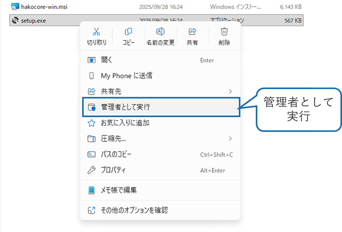
管理者モードで実行するか？と聞かれるのでOKをクリックしてインストールを実行してください。
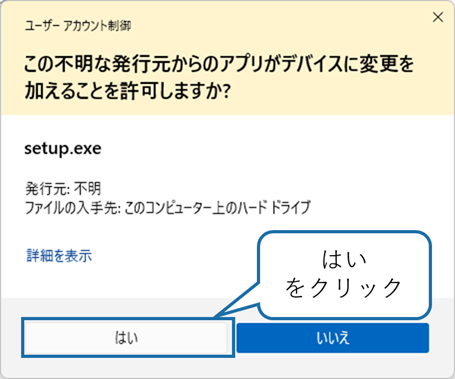
インストール画面が表示されるので、次へ(N)>をクリックして次の画面に進みます。
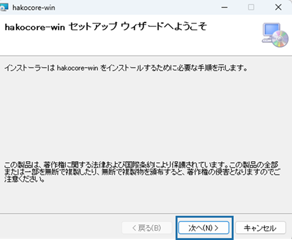
インストール フォルダの選択画面が表示されます。インストール先はデフォルトではC:¥User¥<ユーザ名>¥AppData¥Roming¥になります。次へ(N)>をクリックして次の画面に進みます。
インストーラ先のフォルダの変更が必要な場合は変更して、次へ(N)>をクリックして次の画面に進みます。
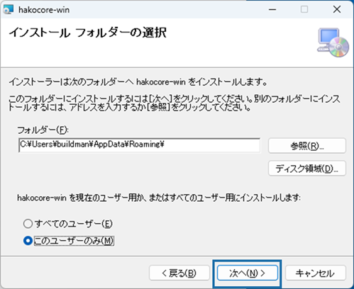
⚠️インストール フォルダの選択について Windows環境でOneDriveが設定されている場合には注意が必要です。OneDriveのバックアップ対象のフォルダ(例：Desktop,Documentsなど)を選択するとOneDriveにリダイレクトされるので注意してください。
インストールの確認画面がが出ますので、次へ(N)>をクリックして次の画面に進みます。
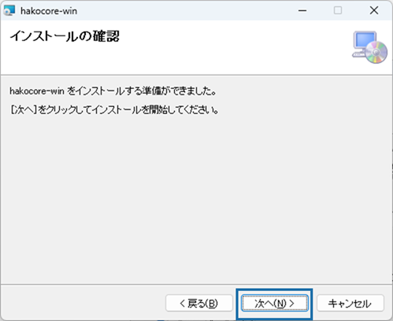
インストールが始まりますので、しばらく待ちます。
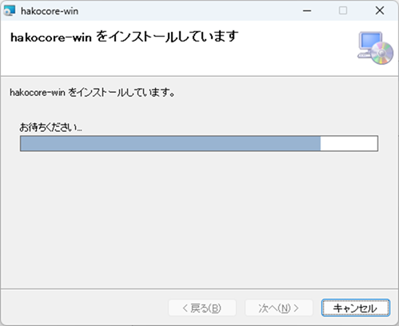
インストール中に箱庭ドローンシミュレータに必要なPythonライブラリがインストールされます。内容を確認してOKボタンをクリックします。
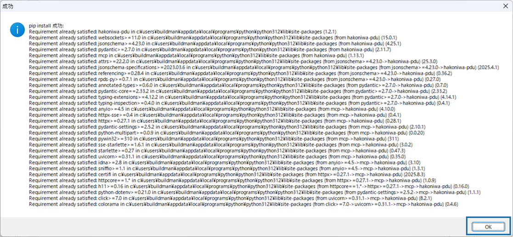
インストールが完了するとインストール完了の画面が表示されますので、閉じるをクリックしてインストールを完了します。
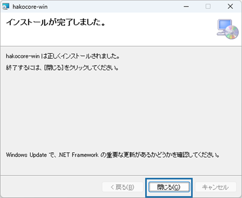
4. インストール後の確認
箱庭コア機能がインストールされたことを確認します。
タスクバーのWindowsマークを右クリックして、システムをクリックします。
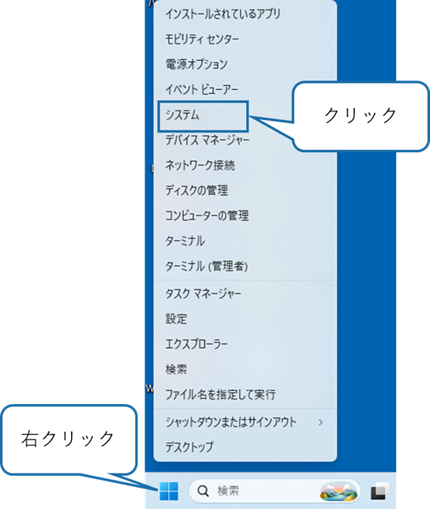
システムをクリックするとシステム＞バージョン情報の画面が表示されますので、システムの詳細設定をクリックします。
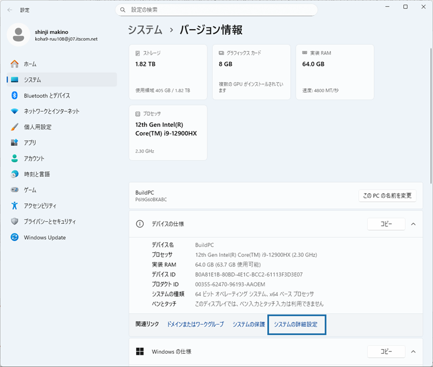
システムの詳細設定をクリックすると、システムのプロパティが表示されますので、環境変数をクリックします。
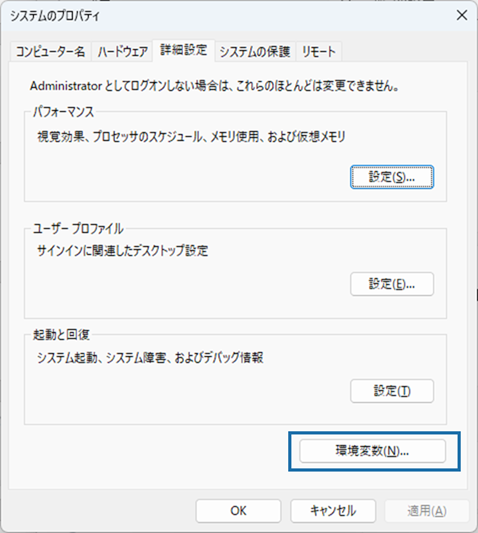
環境変数をクリックすると環境変数が確認できますので、以下の変数が登録されていることを確認してください。
| 変数名 | 概要 |
|---|---|
| HAKO_CONFIG_PATH | 箱庭コアのコンフィグパス |
| PYTHONPATH | 箱庭コアのPythonライブラリパス |
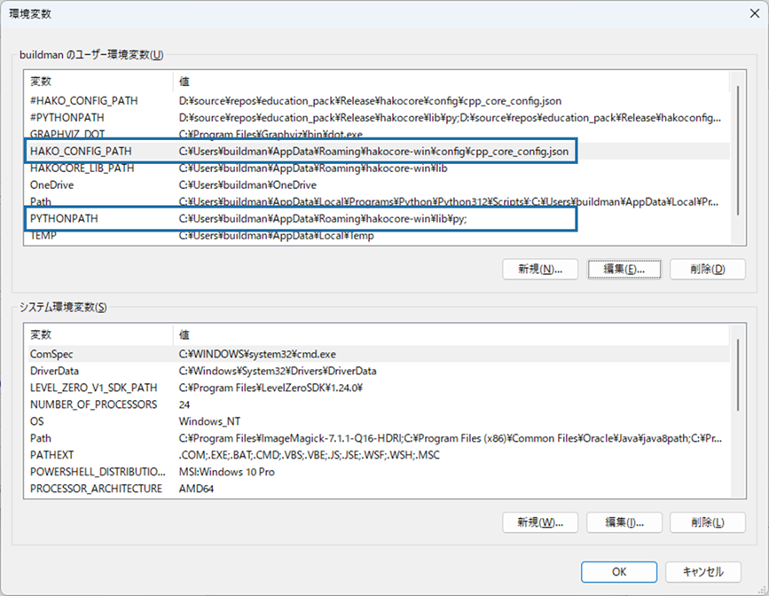
5. ⚠️トラブルシューティング⚠️
5.1. 環境変数が登録されていなかった場合
この場合は、管理者権限モードでインストールができてないことが原因ですので、管理者権限でインストールを実行してください。
5.2. pipの実行が失敗した場合
この場合は、Python 3.12の環境が事前にインストールされていないことが原因です。Python 3.12の環境をインストールして、箱庭コア機能をインストールを管理者権限で実行しなおしてください。